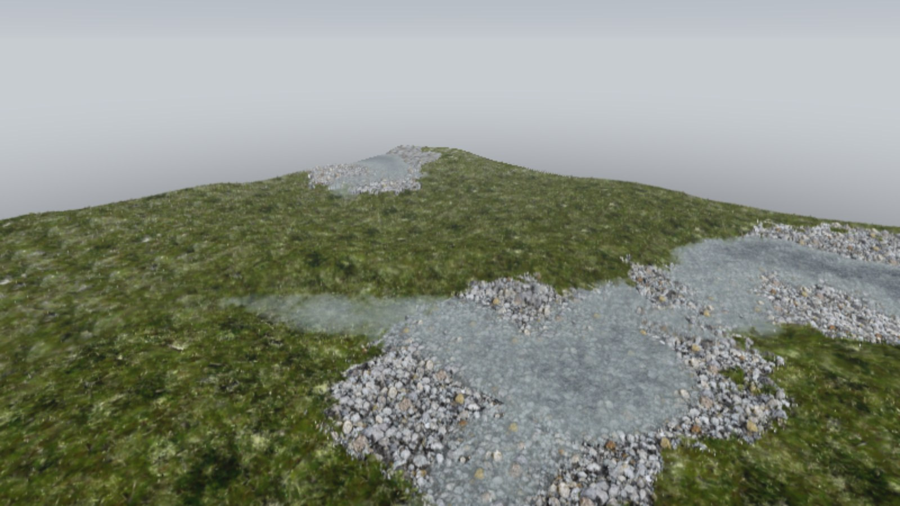
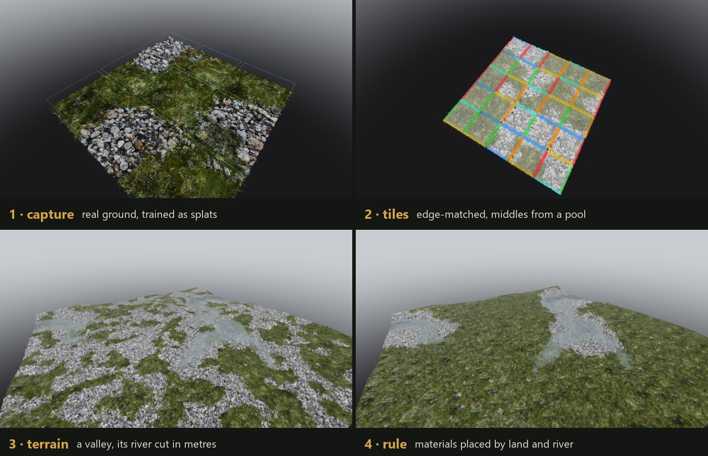
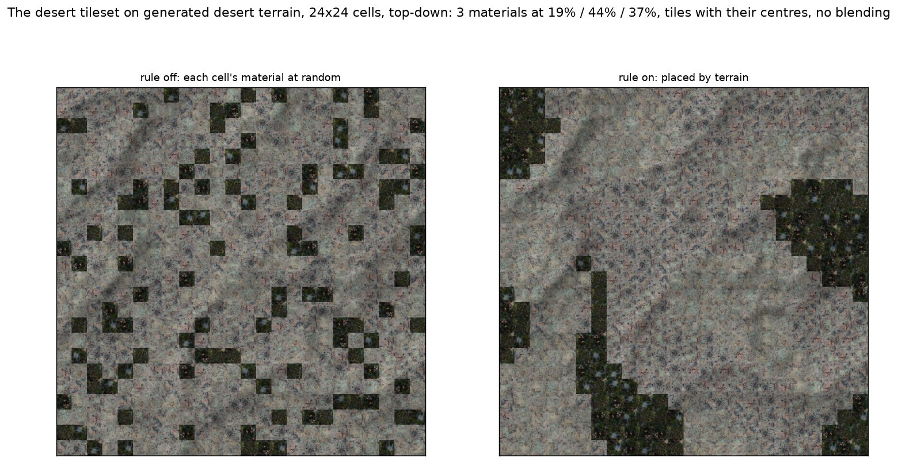
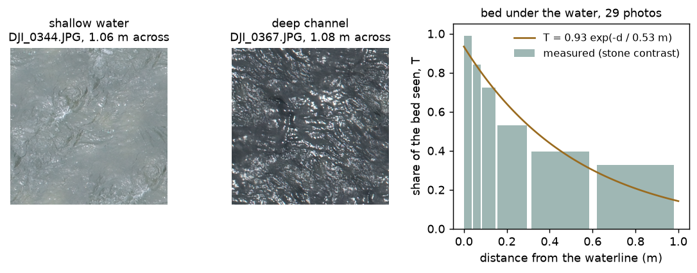
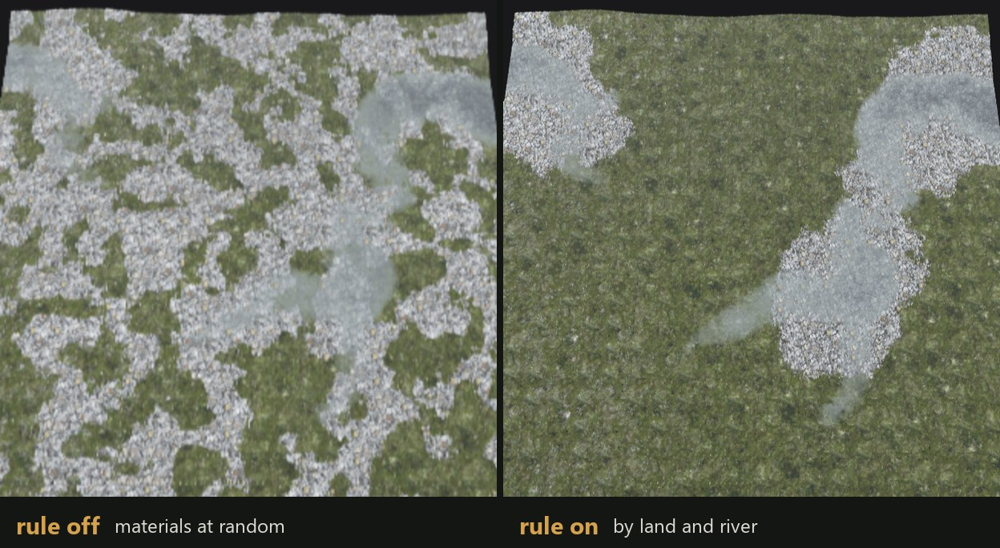
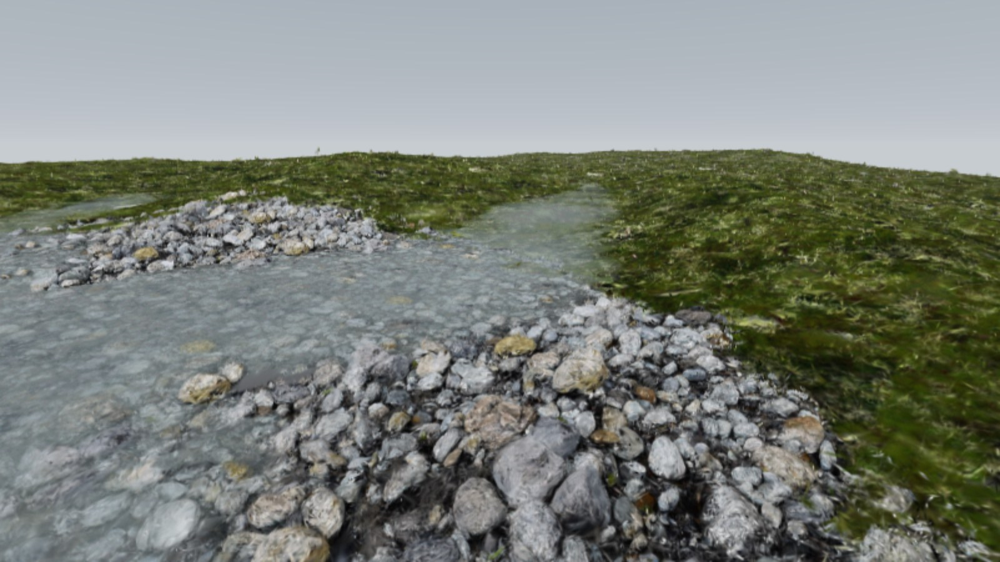

bozkır: Captured Ground, Placed by Terrain
Live demo
The viewer runs in the browser with no installation. Load it here, or play the same one-minute demo live at full screen.

Abstract
Open worlds need kilometres of ground; a scan of real ground covers a few square metres. bozkır turns such a scan, trained as 3D Gaussian splats, into edge-matched tiles whose middles come from a pool of the capture's own ground, and lays them over procedural terrain. Which material goes where is computed from the land itself (drainage, position, slope, height) rather than painted. Where the land drains, a river is cut into it in metres, and its water is drawn from layers measured in the drone photos the gravel came from. Everything runs in a browser on a laptop GPU.
Pipeline

Method
Capture to tiles
Drone photos are posed with COLMAP and a block of ground is trained with gsplat, then levelled and set in metres. The export finds the capture's materials and its cleanest patches of each, checks every candidate for see-through holes and haze, and builds Wang tiles from them with min-cut seams. A tile keeps only a frame along its edges; each cell's middle is a centre drawn and turned in the viewer from a pool of the material's own ground, so the same tile is never repeated whole. Every decision is measured from the capture and printed with its reason.
Materials placed by the land
Terrain is generated and eroded in the browser (stream power, solved implicitly). Each material goes where the land says: the one that collects in hollows and channels, the exposed one on steep, convex ground, from the same rule file the Python pipeline reads. A share slider sets how much of a material there is; the terrain sets where.

Rivers and water
The largest drainage systems become rivers sized in metres: narrower up the branches, a bed a twentieth as deep as it is wide, deeper on the outside of bends with point bars inside, pools and riffles every few widths. The water is a level surface that never rises downstream. Under it, the bed fades by a share measured from 29 drone photos of the Lütschine, into the milky shallow water and then the dark channel water, both photographed. Stones above the level stay dry, so the waterline follows them. Gravel bars go where a river leaves them: low beside the water and within reach of it.

Results


In the browser
WebGL2 with no third-party code: splats sorted per tile in a worker, tiles ordered by their shared-edge constraints, bent over the terrain through its true Jacobian, levels of detail, and a far field that hands distant ground to one mesh textured from an atlas of the tiles. A world of 256 × 256 tiles holds about 30 fps on a laptop GPU.
Limitations
- Lighting is baked into a capture: no relighting, no time of day.
- A drone capture at 3 to 4 mm per pixel holds up to about a metre away; grass that moves in the wind between photos stays soft.
- The material rule's one test against survey data could not decide: the plot is a single slope.
- Water is shading on the splats and a level surface, not simulated.
Built on
The idea of tiling Gaussian-splat ground with Wang tiles comes from Gaussian Splatting Wang Tiles (Zeng, Ma and Sander), where this project began. Frames and centre pools, the material rule, the river and its water, and most of the export and the renderer are its own.
Desert: OpenDroneMap COPR dataset (Tobias and Mandel 2009), CC BY-SA 4.0. River gravel and water: Lütschine L2 drone survey, Mair et al. 2022 (Zenodo 6415047), CC BY 4.0. Grass: Uruguayan native grassland UAV images (Zenodo 14771664), CC BY 4.0.
References
Zeng, Ma, Sander. Gaussian Splatting Wang Tiles. SIGGRAPH Asia 2025.
Kerbl, Kopanas, Leimkühler, Drettakis. 3D Gaussian Splatting for Real-Time Radiance Field Rendering. SIGGRAPH 2023.
Cohen, Shade, Hiller, Deussen. Wang Tiles for Image and Texture Generation. SIGGRAPH 2003.
Kwatra, Schödl, Essa, Turk, Bobick. Graphcut Textures. SIGGRAPH 2003.
Heitz, Neyret. High-Performance By-Example Noise using a Histogram-Preserving Blending Operator. HPG 2018.
Braun, Willett. A very efficient O(n), implicit and parallel method to solve the stream power equation. Geomorphology 2013.
Leopold, Maddock. The Hydraulic Geometry of Stream Channels. USGS 1953. Leopold, Wolman. River Meanders. GSA Bulletin 1960.
Mair et al. Grain size of fluvial gravel bars from close-range UAV imagery. Earth Surface Dynamics 2022.